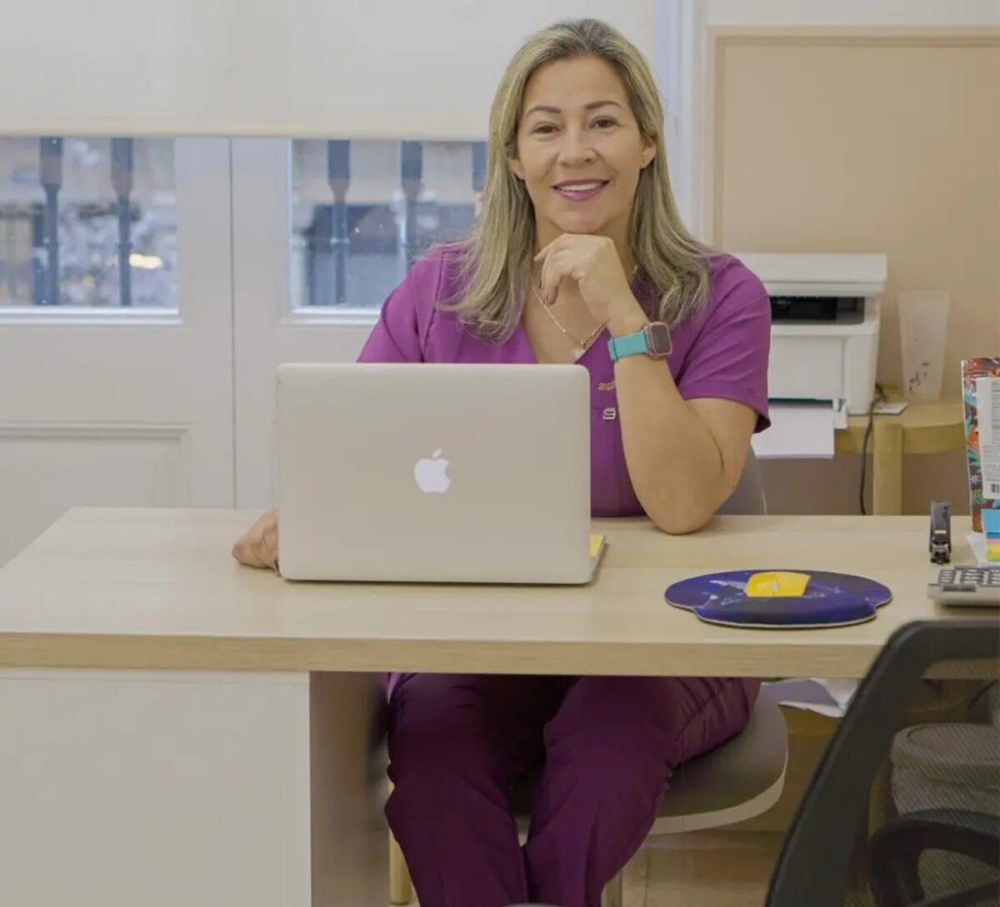
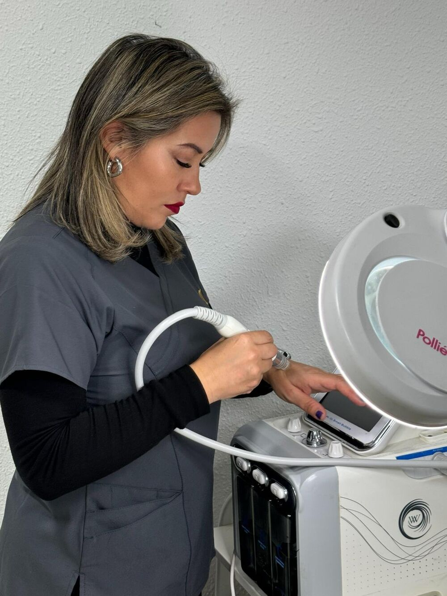

Te vas a operar
Liposucción, abdominoplastia, mommy makeover, BBL… Dejamos tu postoperatorio organizado antes de entrar a quirófano.
Te acompañamos antes y después de tu cirugía: valoración con Diana, drenaje postoperatorio, tu faja en tu talla y alguien a quien escribir cuando tengas dudas. En L'Eixample, Barcelona.

Cada caso es distinto. Lo vemos contigo en la valoración, siempre siguiendo las indicaciones de tu cirujano.
Liposucción, abdominoplastia, mommy makeover, BBL… Dejamos tu postoperatorio organizado antes de entrar a quirófano.
Tu cirujano te ha indicado drenajes y buscas a alguien de confianza cerca. Te buscamos hueco cuanto antes.
Quieres cuidar tu cuerpo con tratamiento corporal. Empezamos por escucharte y te proponemos un plan por escrito.
Trabajamos junto a médicos y cirujanos. Si vienes de fuera de Barcelona, también te ayudamos con dónde quedarte.
Nos cuentas qué buscas y cuándo es tu cirugía. Te escribimos por WhatsApp en un minuto.
Te escucha, te explica cómo serán las sesiones y te asesora con la faja.
Sesiones, prendas y precio cerrado. Sin compromiso: lo piensas con calma.
Sesiones cuando te indique tu cirujano, recordatorios y alguien a quien escribir siempre.

«Con más de 20 años de experiencia, soy Diana Carrillo, especialista en estética y cuidado postoperatorio en Barcelona. En mi clínica, junto a médicos y cirujanos de prestigio, diseñamos tratamientos 100% personalizados para ti.»
Maqueta: textos tomados de dianacarrillo.es y de su ficha de Treatwell. El texto final lo valida Diana.
Sesiones de unos 45 minutos. El número de sesiones y el precio te los damos por escrito en la valoración.
30 opiniones verificadas en Treatwell
«Me realice mi postoperatorio con Diana, ponerme en sus manos fue la mejor decisión. Es una excelente profesional, muy dedicada y con una energía maravillosa. […] me sentí acompañada y en las mejores manos en todo momento.»
«Súper contenta con el tratamiento que me ofrecieron, la atención por parte de David y Diana siempre la mejor. Los recomiendo.»
«Excelente servicio!!»
Somos distribuidoras de fajas colombianas M&D: fajas cortas y largas, reloj de arena, sujetadores postoperatorios y tablas. Te asesoramos en la valoración para que la tengas lista antes de tu cirugía.
Así Diana sabe qué necesitas antes de verte.
Te escribimos por WhatsApp en un minuto
Déjanos tu nombre y tu teléfono y te proponemos hueco para la valoración con Diana.
Listo. En la versión real, Sofía, la asistente del centro, te escribiría ahora por WhatsApp.
Maqueta: este formulario no envía nada ni guarda ningún dato.
Cuando te lo indique tu cirujano. Nosotras nos adaptamos a sus indicaciones y te guardamos los huecos para esos días.
Depende de tu cirugía y de lo que marque tu cirujano. Diana te lo concreta en la valoración. Tenemos bonos de 6, 10 y 12 sesiones.
Depende del número de sesiones y de la faja que necesites. Te damos el precio cerrado y por escrito en la valoración, sin compromiso.
Sí. Además del postoperatorio, te ayudamos con el hospedaje y con enfermeros durante los primeros días. Cuéntanoslo en el test y Diana te llama.
En Consell de Cent, 325, principal primera, en L'Eixample (Barcelona). De lunes a viernes, de 10:00 a 20:00.
Una valoración para saber qué necesitas y cuánto cuesta, por escrito.
Pedir mi valoración